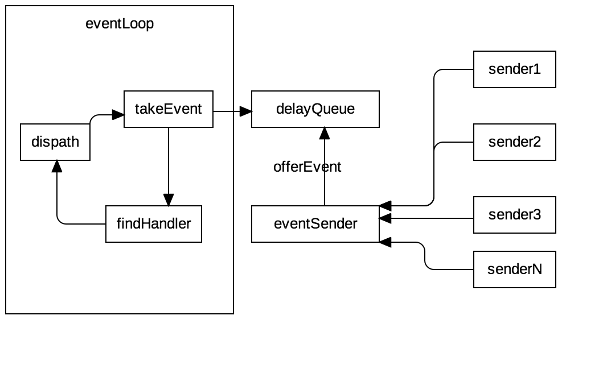

先看图事件循环开启之后，有一个线程循环的从delayQueue中获得事件对象，然后根据事件查找他的处理器，之后循环回调每个处理器。完成后继续去拿事件，再次循环处理。然后可能有多个事件投递方，他们可以在任何时刻投递一个事件在delayQueue 中
event
event 是一个数据结构，是用来投递到事件循环的结构体。它包含如下属性：
- topic 代表事件主题，事件处理器根据这个主题来确定能够处理这个事件，判断哪些处理器来处理本事件
- what 事件的子类型，但是我发现这个设计目前机会没有被使用到
- data 事件所携带的参数信息，也就是事件的具体内容，目前是一个object，可以存放任何对象类型
- time 事件被激发的时间点，如果设置他，可以标记改事件在未来某个时间点才回被触发，用来实现延时事件
EventHandler
EventHandler是事件处理器，如果你想你的事件监听能够处理某个事件，那么需要实现这个接口
package com.virjar.vscrawler.core.event;
/**
* Created by virjar on 17/4/30.
* @author virjar
* @since 0.0.1
*/
public interface EventHandler {
void handEvent(Event event);
}
接口很简单
demo
public class EventTest {
public static void main(String[] args) {
EventLoop.getInstance().loop();
AutoEventRegistry eventRegister = AutoEventRegistry.getInstance();
eventRegister.registerObserver(new UserLoginEvent() {
@Override
public void afterUserLogin(User user, boolean loginSucces) {
System.out.println(Thread.currentThread() + "用户登录:" + (loginSucces ? "成功" : "失败"));
}
});
UserLoginEvent userLoginEvent = eventRegister.findEventDeclaring(UserLoginEvent.class);
for (int i = 0; i < 10; i++) {
userLoginEvent.afterUserLogin(null, false);
}
CommonUtil.sleep(20000);
}
}
是不是还是觉得有点迷糊，因为我觉得存粹的event来处理用起来很不方便，所以又做了一次封装。请看下节：自动事件